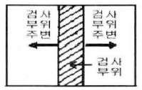

자기비파괴검사산업기사 (2014-08-17 기출문제)
1과목: 비파괴검사 개론
1. 방사선투과검사에서 X선관에 가해지는 전압이 높을수록 어떠한 변화가 생기는가?
- X선의 평균 파장은 증가한다.
- 최단 파장은 단파장 쪽으로 이동한다.
- X선 강도곡선의 형태가 변하지 않는다.
- 최고 강도를 나타내는 파장은 장파장 쪽으로 이동한다.
(정답률: 6%)

2. 다음 중 시험체의 미세한 표면균열에 대한 검출신뢰도가 가장 높은 비파괴검사법은?
- 침투탐상시험
- 방사선투과시험
- 초음파탐상시험
- 중성자투과시험
(정답률: 14%)
3. 다음 중 비파괴검사가 아닌 것은?
- 누설시험
- 충격시험
- 육안시험
- 초음파 두께 측정
(정답률: 17%)
4. 자분탐상검사의 장점으로 보기 어려운 것은?
- 검사할 시험체의 형상에 큰 영향을 주지 않는다.
- 자분모양이 표면에 직접 나타나 비교적 판독이 용이하다.
- 강자성체 표면의 미세하고 얕은 표면 균열의 검출 강도가 높다.
- 검출능이 방향 의존성으로 인해 최상의 결과를 얻기 위해서는 2번 또는 그 이상의 자화가 필요하다.
(정답률: 12%)
5. 초음파탐상시험에서 공진법으로 시험체의 두께를 측정할 때 2MHz의 주파수에서 기본공명이 발생하였다면 이 시험체의 두께는 몇 mm인가? (단, 시험체내의 초음파 속도는4,800m/s이다.)
- 1.2
- 2.4
- 3.6
- 4.8
(정답률: 4%)
6. 상자성체 금속이 아닌 것은?
- Au
- Cr
- Al
- Pt
(정답률: 8%)
7. 대표적인 시효 경화성 합금은?
- Fe-C 합금
- Cu-Zn 합금
- Cu-Sn 합금
- Al-Cu-Mg-Mn 합금
(정답률: 13%)
8. 황동의 평형상태도상에는 6개의 상이 있다. 이 중에서 α상의 결정구조는?
- 정방격자
- 면심입방격자
- 조밀육방격자
- 체심입방격자
(정답률: 9%)
9. 금속이 일정한 온도에서 전기저항이 제로(zero)가 되는 현상을 무엇이라고 하는가?
- 석출
- 열전달
- 질량효과
- 초전도
(정답률: 13%)
10. 0.2%C강의 표준상태에서(공석점 직하) 펄라이트의 양은 약 몇 %인가? (단, 공석점 0.8%C, α최대탄소 용해한도 0.025%C 이다.)
- 10%
- 23%
- 44%
- 50%
(정답률: 11%)
11. 킬드강에 대한 설명으로 옳은 것은?
- 캠을 씌워 만든 강이다.
- 완전하게 탈산한 강이다.
- 탈산을 하지 않은 강이다.
- 불완전하게 탈산한 강이다.
(정답률: 13%)
12. 반도체용 재료로 가장 많이 사용되는 것은?
- Fe
- Si
- Cu
- Mg
(정답률: 9%)
13. 소성가공 방법이 아닌 것은?
- 주조
- 단조
- 압출
- 전조
(정답률: 10%)
14. 베어링용 합금이 아닌 것은?
- 베빗메탈(Babbit metal)
- 켈밋메탈(Kelmet metal)
- 모넬메탈(Monet metal)
- 루기메탈(Lurgi metal)
(정답률: 9%)
15. Mg합금의 특징으로 옳은 것은?
- 상온변형이 가능하다.
- 고온에서 비활성이다.
- 감쇠능은 주철보다 크다.
- 치수 안정성이 떨어진다.
(정답률: 8%)
16. 어떤 용접기의 사용율은 60%이다. 1시간 동안에 몇 분을 사용할 수 있는가?
- 24분
- 36분
- 48분
- 12분
(정답률: 11%)
17. 다음 주철의 보수 용접 방법이 아닌 것은?
- 스터드법
- 비녀장법
- 후진법
- 로킹법
(정답률: 6%)
18. 피복 아크 용접에서 아크 쏠림을 방지하는 방법이 아닌 것은?
- 엔드 탭을 사용한다.
- 아크 길이를 짧게 한다.
- 접지점을 될 수 있는 대로 용접부에서 멀리 한다.
- 직류 용접기를 사용한다.
(정답률: 6%)
19. 용접부의 풀림 처리에 대한 설명으로 올바른 것은?
- 충격저항이 감소된다.
- 경화부가 더욱 경화된다.
- 잔류응력이 감소된다.
- 취성이 생긴다.
(정답률: 13%)
20. 용입이 깊고 전극 와이어보다 앞에 입상의 용제를 산포하면서 일반적으로 아래보기용접에 적용되는 자동용접은?
- 서브머지드 아크 용접
- 일렉트로 슬래그 용접
- 플라스마 아크 용접
- 일렉트로 가스 아크 용접
(정답률: 14%)
2과목: 자기탐상검사 원리 및 규격
21. 연속법에서 건식과 습식에 따라 탐상면에 자분을 적용하는 시기로 옳은 것은?
- 건식과 습식 모두 통전을 끊은 상태에서 자분을 적용한다.
- 건식과 습식 모두 통전하고 있는 상태에서 자분을 적용한다.
- 건식은 통전하고 있는 상태에서, 습식은 통전을 끊은 상태에서 자분을 적용한다.
- 습식은 통전하고 있는 상태에서, 건식은 통전을 끊은 상태에서 자분을 적용한다.
(정답률: 97%)
22. 건식자분에 대한 설명 중 틀린 것은?
- 시험면에 직접 뿌리거나 분무하여 적용한다.
- 일반적으로 소모품으로 사용된다.
- 추위에 영향을 많이 받는다.
- 내열성이 있다.
(정답률: 96%)
23. 강자성체를 자화시킬 때 자벽이 불연속으로 이동하기 때문에 자극의 중간에 배치한 이중 코일에서 잡음으로 검지되는 현상은?
- 패러데이 효과 Faraday effect)
- 카이저 효과 Kaiser effect)
- 바크하우젠 효과 (Barkhausen effect)
- 커 효과( Kerr effect)
(정답률: 8%)
24. 잔류법에 대한 설명으로 옳은 것은?
- 연속법과 비교하여 결함검출능력이 일반적으로 높다.
- 내부결함 검출능력이 우수하다.
- 탄소함유량이 높은 공구강, 스프링강 등 보자력이 높은 재료에 적용한다.
- 잔류법의 자화전류는 교류만 사용한다.
(정답률: 96%)
25. 탐상 후 후속 작업으로 탈자를 하지 않아도 되는 경우는?
- 시험체가 높은 보자성인 경우
- 시험체가 강철의 용접물인 경우
- 외부 누설자계가 없는 경우
- 초기 자화전류 보다 낮은 전류로 시험체를 재검사하는 경우
(정답률: 12%)
26. 다음 중 표면에서 가장 깊이 위치한 결함을 검출할 수 있는 것은?
- 습식 교류(AC wet)
- 건식 교류(AC dry)
- 습식 직류(DC wet)
- 건식 직류(DC dry)
(정답률: 95%)
27. 막대 자석에 종이를 덮고 그 위에 쇳가루를 뿌리고 가볍게 흔들어 주었을 때, 쇳가루의 분포되는 현상에 대한 설명으로 잘못 된 것은?
- 자극으로부터 쇳가루가 연결되어 선을 이루지만 다른 쪽의 자극까지 이어지지는 않는다.
- 자극의 가까이에는 쇳가루가 밀집되고, 자극으로부터 멀어지면 드물게 나타난다.
- 쇳가루가 밀집된 곳은 자계의 세기가 강한 곳이다.
- 쇳가루의 분포 모양만으로는 자극(N, S)을 구별할 수 없다.
(정답률: 14%)
28. 자화된 시험체에 다른 자성체가 접촉했을 때 나타나며 흐리고 얆은 지시로서 탈자 후 재검사하면 없어지는 의사모양의 지시는?
- 전류 지시
- 자기펜 자국
- 단면급변 지시
- 재질경계 지시
(정답률: 98%)
29. 자력선의 성질에 대한 설명 중 틀린 것은?
- 자력선은 자석내부를 지나 N극에서 나와 S극으로 들어가는 폐곡선을 이룬다.
- 자릭선은 서로 도중에서 갈라져서 서로 교차하는 특징이 있다.
- 자력선의 임의의 한 점에서 그은 접선 방향은 그 곳에서의 자계의 방향을 나타낸다.
- 전계와 마찬가지로 자력선이 밀한 곳일수록 자계의 세기는 강하다.
(정답률: 98%)
30. 자기탐상시험에 사용되는 자성분말에 해당되지 않는 것은?
- 전해철분
- δ-일산화제2철분
- 사삼산화철분
- 환원철분
(정답률: 96%)
31. 보일러 및 압력용기에 대한 자분탐상검사( ASME Sec.V Art.7)에 따른 형광자분탐상에 대한 것으로 틀린 것은?
- 시험면의 밝기는 10룩스를 초과하지 말 것
- 자외선등의 강도는 1000μW/cm2 이상일 것
- 자외선등의 파장은 365nm이어야 한다.
- 자외선등의 예열시간은 5분 이상일 것
(정답률: 13%)
32. 철강 재료의 자분탐상 시험방법 및 자분모양의 분류(KS D 0213)에서 자화전류는 어떻게 표시하는가?
- 평균치
- 실효치
- 파고치
- 최소치
(정답률: 96%)
33. 보일러 및 압력용기에 대한 자분탐상검사(ASME Sec.V Art.7)에서 Yoke의 극간 거리가 50 ~ 100mm일 때 직류 전류를 사용하는 경우 권고하고 있는 인상력(lifting power)은?
- 45N(4.5kg)이상
- 90N(9.0kg)이상
- 135N(13.5kg)이상
- 225N(22.5kg)이상
(정답률: 6%)
34. 철강 재료의 자분탐상 시험방법 및 자분모양의 분류(KS D 0213)에서 자화 전류의 종류에 따른 특징을 나타낸 것으로 옳은 것은?
- 충격전류는 원칙적으로 내부 흠의 검출에 한한다.
- 직류는 연속법에만 사용할 수 있다.
- 맥류는 내부 흠의 검출성능이 낮다.
- 교류는 연속법 및 잔류법에 사용할 수 있다.
(정답률: 94%)
35. 보일러 및 압력용기에 대한 자분탐상검사(ASME Sec.V Art.7)에 따라 탐상 실시 전에 검사부위 및 검사 부위 주변을 전처리하여야 한다. 검사부위 주변을 최소 얼마까지 전처리하여야 하는가?

- 0.5인치(12.5mm)
- 1인치(25mm)
- 1.5인치(38mm)
- 2인치(51mm)
(정답률: 98%)
36. 철강 재료의 자분탐상 시험방법 및 자분모양의 분류(KS D 0213)에 따라 시험기록을 작성할 때 기입해야 할 사항 중 자화전류치 및 통전시간에 대한 설명이다. 잘못된 것은?
- 자화전류치는 파고치로 기재한다.
- 코일법인 경우는 코일의 치수, 권수를 부기한다.
- 프로드법의 경우는 프로드 간격을 부기한다.
- 요크법인 경우는 요크 길이를 부기한다.
(정답률: 93%)
37. 철강 재료의 자분탐상 시험방법 및 자분모양의 분류(KS D 0213)에서 투자율이 다른 두 재질의 접합부에 누설자속에 의하여 형성된 자분지시의 원인은?
- 단면급변에 의한 지시
- 표면거칠기에 의한 지시
- 재질경계에 의한 지시
- 자기펜 자국에 의한 지시
(정답률: 96%)
38. 철강 재료의 자분탐상 시험방법 및 자분모양의 분류(KS D 0213)에 의해 연속한 자분모양으로 분류되는 것은?
- 1개의 용입부족 길이가 50mm인 긴 선상의 자분모양
- 직경이 1mm인 가공에 의해 나타난 지시 3개가 1mm간격으로 일렬로 나타난 자분모양
- 균열에 의해 나뭇가지 모양으로 연결되어 길이가 30mm인 자분모양
- 길이가 25mm, 나비가 2mm인 자분모양과 길이가 5mm, 나비가 2mm인 자분모양이 5mm 간격으로 나타난 지시
(정답률: 96%)
39. 철강 재료의 자분탐상 시험방법 및 자분모양의 분류(KS D 0213)에 따른 시험방법 중 자화방법 분류에 있어 잘못된 것은?
- 전류 관통법
- 자속 관통법
- 충격 전류법
- 축 통전법
(정답률: 98%)
40. 보일러 및 압력용기에 대한 자분탐상검사(ASME Sec.V Art.7)에서 지시모양의 기록에 대한 설명으로 옳은 것은?
- 불합격지시는 선형 혹은 원형으로 기록한다.
- 시험체 두께별 합격기춘치를 정하여 기록하여야 한다.
- 등급별, 종류별로 불합격지시의 기준치를 분류하여 기록하여야 한다.
- 시험체의 재질 및 두께에 따라 불합격 기준치를 모두 기록하여야 한다.
(정답률: 6%)
3과목: 자기탐상검사
41. 자분탐상검사에 사용되는 자외선조사등(black light)의 파장 범위로 옳은 것은?
- 320~400nm
- 420~450nm
- 565~650nm
- 680~780nm
(정답률: 15%)
42. 자분모양의 기록방법 중 전사에 의한 방법은?
- 자기 테이프 이용법
- 사진 촬영법
- 스케치에 의한 방법
- 가열 후 응고처리법
(정답률: 14%)
43. 자분탐상검사법 중 극간법과 프로드법을 비교한 것으로 틀린 것은?
- 극간법은 탐상면에 스파크 등의 손상을 주지 않는다.
- 극간법은 자극을 연결한 선에 수직으로 놓여진 결함이 가장 잘 나타난다.
- 프로드법은 프로드를 연결한 선과 수직으로 놓여진 결함이 가장 잘 검출된다.
- 프로드법은 검사품에 직접 전류를 적용하므로 전극을 잘 접촉시켜야 한다.
(정답률: 12%)
44. 케이블로 자화시 케이블과 시험면이 접촉한 부분에 희미하고 굵은 모양으로 나타나는 의사지시는 무엇인가?
- 자기펜 흔적
- 단면급변부 지시
- 전류 지시
- 전극 지시
(정답률: 11%)
45. 자분탐상검사로 시험체의 결함을 검출하려고 할 때 자화방법과 그에 대한 설명이 틀린 것은?
- 축통전법 - 시험체의 축방향으로 직접전류를 흐르게 한다.
- 직각통전법 - 시험체의 축에 대하여 수평방향으로 직접 전류를 흐르게 한다.
- 극간법 - 시험체 또는 시험할 부위를 전자석 또는 영구 자석의 자극사이에 놓는다.
- 자속관통법 - 시험체의 구멍 등에 통과시킨 자성체에 교류 자속 등을 가함으로써 유도전류를 흐르게 한다.
(정답률: 13%)
46. 자분탐상검사로 외경 50mm, 길이 600mm, 두께 6mm인 강관에 있는 균열 결함을 찾고자 중심도체법을 적용할 때 필요한 전류값(A)은 약 얼마인가?
- 600 ~ 800
- 800 ~ 1000
- 1400 ~ 1800
- 2000 ~ 2400
(정답률: 9%)
47. 다음 중 원형자화를 이용한 자화방법이 아닌 것은?
- 극간법
- 프로드법
- 직각통전법
- 자속관통법
(정답률: 9%)
48. 직경의 변화가 있는 시험체를 축통전법으로 자화시켜 검사할 때의 전류값의 설정 순서로 옳은 것은?
- 작은 직경을 기준으로 설정한다.
- 직경이 작은 것을 기준으로 검사한 후 큰 것 기준으로 다시 한다.
- 직경이 큰 것을 기준으로 검사한 후 작은 것 기준으로 다시 한다.
- 큰 직경을 기준으로 설정한다.
(정답률: 13%)
49. 자분 탐상검사 후 탈자를 수행할 때 탈자전류의 방향이 바뀌는 주기가 매우 중요한데 그 이유로 가장 적합한 것은?
- 주기가 느리면 탈자가 부분적으로 복원되기 때문이다.
- 주기가 빠르면 탈자가 표면에만 국한되기 때문이다.
- 주기가 빠르면 유도효과에 의한 잔류자계가 증대되기 때문이다.
- 주기가 느리면 자기이력곡선의 폐회로가 완전하게 이루어지지 않기 때문이다.
(정답률: 12%)
50. 탈자 후 시험체에 자극이 없는 경우의 탈자를 확인하는 방법으로 다음 중 적합한 것은?
- 홀 소자를 사용한 자속계로 측정한다.
- 간이형 자장지시계로 측정한다.
- 시험체를 강자성체로 마찰하여 자분을 적용하고, 마찰 된 부분에 자분의 부착 여부로 확인한다.
- 자기컴퍼스로 측정한다.
(정답률: 9%)
51. 다음 중 자분이 갖추어야 할 특성이 아닌 것은?
- 높은 투자성을 가질 것
- 낮은 보자성을 가질 것
- 유동성과 분산성이 높을 것
- 교류전류에서 표피효과가 클 것
(정답률: 13%)
52. 자분탐상검사에 사용되는 검사액의 분산매가 갖추어야 할 성질로 적합하지 않은 것은?
- 점도가 낮을 것
- 휘발성이 작을 것
- 적심성이 없을 것
- 장기간 변질이 없을 것
(정답률: 13%)
53. 검사체에 대하여 적합한 자분탐상시험 방법으로 올바르게 짝지어진 것은?
- 구조물 용접부 - 극간법
- 가늘고 긴 환봉 - 프로드법
- 대형 주강품 - 축통전법
- 대형 주물품 - 전류 관통법
(정답률: 11%)
54. 자분탕상검사와 침투탐상검사 모두에서 검출할 수 있는 결함은?
- 강관의 외경 변화
- 환봉 강의 내부 결함
- 저탄소강의 표면 결함
- 알루미늄 용접부의 기공
(정답률: 13%)
55. 자분탐상시험에 의해 검출 가능한 결함에 대한 설명으로 옳은 것은?
- 강괴 내부 중심부의 수축공
- 강철제 코일 용수철의 피로균열
- 강관 살두꼐의 감소부
- 강판 용접부의 용입불량
(정답률: 11%)
56. 직경에 비해 길이가 비교적 긴 형태의 시험체 또는 크기가 작고 수량이 많은 시험체에 가장 적합하게 적용할 수 있는 방법은?
- 축통전법
- 프로드법
- 전류관통법
- 코일법
(정답률: 9%)
57. 열처리해야 할 용접부의 자분탐상검사 시 합격 여부를 결정하기 위한 적절한 시기는?
- 처음 예열 후 즉시
- 용접 후 최소한 2일 경과 후
- 용접 후 최소한 3일 경과 후
- 최종 열처리 후
(정답률: 14%)
58. 자분탐상시험시 자분은 어떤 자기특성을 지녀야 좋은가?
- 비대칭 자기이력
- 낮은 투자율
- 낮은 보자성
- 높은 잔류자기
(정답률: 12%)
59. 원둘레 용접을 위한 6인치 파이프 끝 부분의 개선부를 현장에서 자분탐상검사할 때 가장 알맞은 방법은?
- 극간법
- 중심도체법
- 통전법
- 프로드법
(정답률: 8%)
60. 자화전류를 끊고 나서 자분을 적용하여 검사하는 방법은?
- 연속법
- 습식법
- 잔류법
- 건식법
(정답률: 14%)